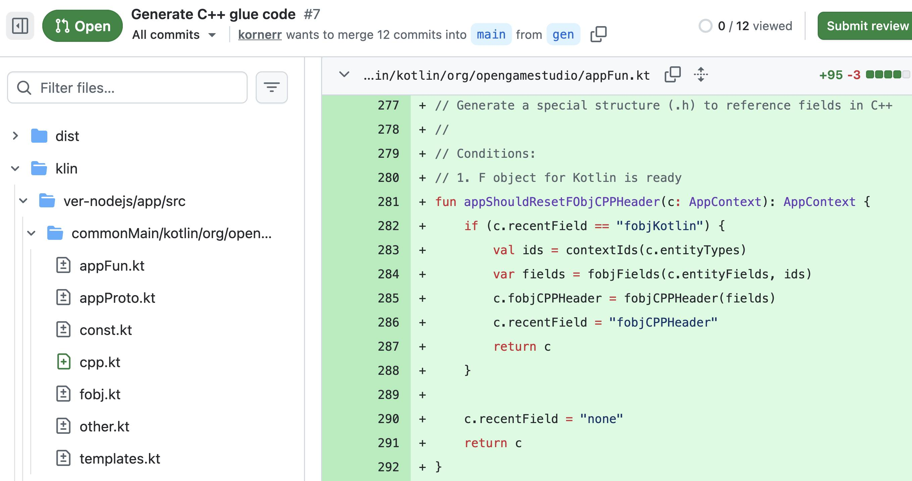
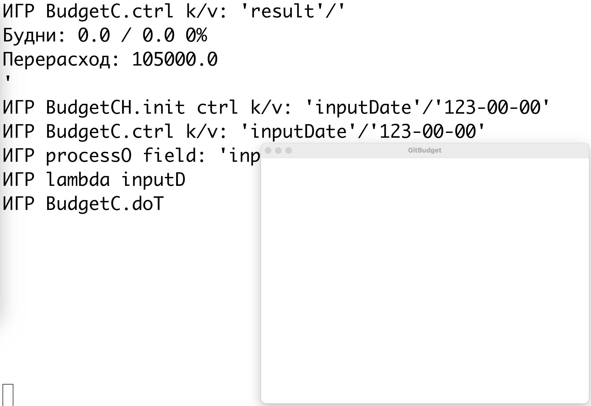
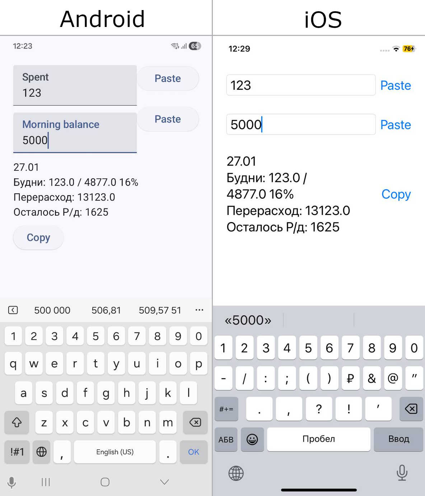

Новости
Завершение разработки прототипа голосового приложения для Android
2026-09-03
В августе добавил в Android-приложение:
- интеграцию с LLM через OpenCode
- веб-админку по HTTP
LLM позволяет приложению отвечать на вопросы человека по меню ресторана. Админка позволяет менять меню, а также скачивать журнал работы.
На этом прототип завершён и передан заказчику. За июль и август сделал ровно то, что запланировал в июне. . . .
Разработка прототипа голосового приложения для Android
2026-08-05
Июль
В июле ИИ плотно вошёл в мою жизнь, так как я начал создание прототипа приложения Android для распознавания голоса. На текущий момент я сделал как распознавание текста (Speech-to-text), так и произношение текста (Text-to-speech).
Распознавание голоса сделал с помощью Vosk. Произношение текста — с помощью Sherpa-Onnx. Обе библиотеки работают прямо на устройстве без обращения к серверу.. . .
Минимальная поддержка QList в Kotlin Dialect
2026-07-03

Июнь
В июне вернулся к доработке генератора Klin (Диалект Котлина):
добавил генерацию обёрток для работы со списками элементов. В Qt
обёртка над списком представлена типом QList<Item*>. Генерацию самого
Item ещё предстоить сделать.
Июль
В июле планирую завершить генерацию Item.
. . .
Git Budget на Android использует Git
2026-05-31
Май
Первоначально в мае я хотел сделать отображение истории трат в Git Budget, но история за собой потянула необходимость хранения данных. А данные ведь надо хранить в Git. Поэтому в мае я сделал поддержку pull/push фиксированного репозитория.
Июнь
В июне планирую добавить pull/push в версию для Desktop.
. . .
Git Budget теперь и в виде приложения Qt
2026-05-01
Апрель
В апреле я наконец доработал инструмент Klin для генерации кода обвязки на C++, после чего с помощью Kotlin Dialect удалось получить Git Budget на Qt для macOS.
Отдельного внимания заслуживает экономия строк кода при поддержке нескольких платформ:
| Платформа | Экономия в строках кода | Экономия в % | Общее количество строк кода |
|---|---|---|---|
| Android | 0 (Первичный код) | 0% | 652 |
Диалект Котлина стал ближе к C++
2026-04-03

Март
В марте (как и в феврале) планировал запустить GitBudget на Desktop, но обновление инструмента Klin для генерации кода обвязки для C++ всё ещё в работе. Осталось чуть-чуть.
Апрель
В апреле это уже должно наконец свершиться.
. . .
Диалект Котлина
2026-03-04

Февраль
В феврале планировал запустить GitBudget на Desktop с помощью Qt, но глубина кроличьей норы Kotlin Multiplatform + C++ превзошла мои ожидания. В итоге, за февраль мне удалось лишь проверить техническую осуществимость задуманного, и преобразовать проект Cross-language dialect в Kotlin dialect, чтобы сосредоточиться на Kotlin.
Март
В марте продолжу работу над проектом Kotlin dialect до состояния, когда удастся запустить GitBudget на Desktop с помощью Qt.
. . .
Заготовка GitBudget для Android и iOS
2026-02-01

Январь
В январе воскресил проект GitBudget по двум причинам:
- Cовмещение рабочих целей с целями в хобби, т.к. они пересекаются по Kotlin Multiplatform
- Оценка эффективности Kotlin Multiplatform в уменьшении дублирования кода между платформами (получилось хорошо, цифры в статье на Хабре).
В далёком 2020-м году при первой попытке сделать GitBudget мой акцент был на ведении истории трат, не аналитике. Сейчас же я в первую очередь сделал подсчёт баланса на текущий день по своей модели бюджета, т.е.. . .
Управление файлами
2026-01-01
Декабрь
В декабре переработал управление файлами: теперь это аккордеон с таблицей вместо прежних карточек. Также сделал предпросмотр редактируемой страницы в отдельной вкладке браузера.
В видео показал это и акцентировал внимание на следующих моментах:
- (00:52) Запуск ПСКОВа через
npx - (01:24) Копирование файла
- (01:50) Переименование файла
- (02:50) Предпросмотр в отдельной вкладке браузера. . .
Страница 1 из 11